Introduction: Root Locus Controller Design
In this tutorial we will introduce the root locus, show how to create it using MATlAB, and demonstrate how to design feedback controllers using the root locus that satisfy certain performance criteria.
Key MATLAB commands used in this tutorial are: feedback , rlocus , step , sisotool
Contents
Closed-Loop Poles
The root locus of an (open-loop) transfer function 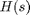 is a plot of the locations (locus) of all possible closed-loop poles with proportional gain K and unity feedback.

The closed-loop transfer function is:
(1)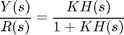
and thus the poles of the closed-loop poles of the closed-loop system are values of  such that 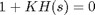.
such that 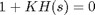.
If we write 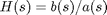, then this equation has the form:
(2)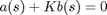
(3)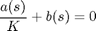
Let = order of 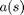 and = order of 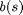 (the order of a polynomial is the highest power of that appears in it).
We will consider all positive values of K. In the limit as , the poles of the closed-loop system are 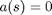 or the poles of . In the limit as , the poles of the closed-loop system are 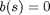 or the zeros of .
No matter what we pick K to be, the closed-loop system must always have poles, where is the number of poles of . The root locus must have branches, each branch starts at a pole of and goes to a zero of . If has more poles than zeros (as is often the case), 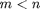 and we say that has zeros at infinity. In this case, the limit of as is zero. The number of zeros at infinity is , the number of poles minus the number of zeros, and is the number of branches of the root locus that go to infinity (asymptotes).
Since the root locus is actually the locations of all possible closed-loop poles, from the root locus we can select a gain such that our closed-loop system will perform the way we want. If any of the selected poles are on the right half plane, the closed-loop system will be unstable. The poles that are closest to the imaginary axis have the greatest influence on the closed-loop response, so even though the system has three or four poles, it may still act like a second or even first order system depending on the location(s) of the dominant pole(s).
Plotting the Root Locus of a Transfer Function
Consider an open-loop system which has a transfer function of
(4)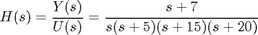
How do we design a feedback controller for the system by using the root locus method? Say our design criteria are 5% overshoot and 1 second rise time. Make a MATLAB file called rl.m. Enter the transfer function, and the command to plot the root locus:
s = tf('s');
sys = (s + 7)/(s*(s + 5)*(s + 15)*(s + 20));
rlocus(sys)
axis([-22 3 -15 15])
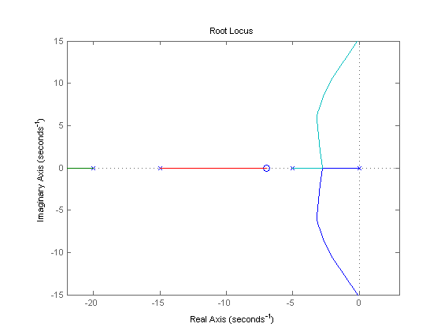 Choosing a Value of K from the Root Locus
The plot above shows all possible closed-loop pole locations for a pure proportional controller. Obviously not all of those closed-loop poles will satisfy our design criteria, To determine what part of the locus is acceptable, we can use the command sgrid(Zeta,Wn) to plot lines of constant damping ratio and natural frequency. Its two arguments are the damping ratio () and natural frequency (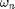) [these may be vectors if you want to look at a range of acceptable values]. In our problem, we need an overshoot less than 5% (which means a damping ratio of greater than 0.7) and a rise time of 1 second (which means a natural frequency greater than 1.8). Enter the following in the MATLAB command window:
Zeta = 0.7; Wn = 1.8; sgrid(Zeta,Wn)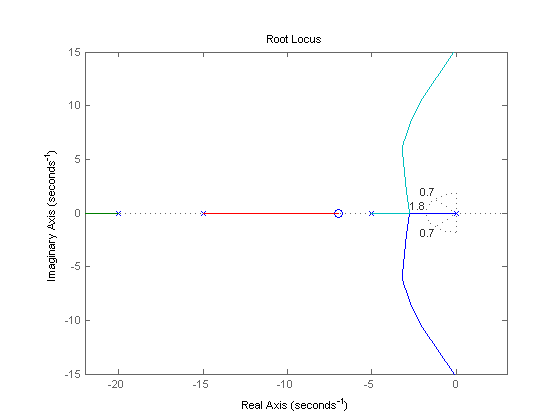
On the plot above, the two dotted lines at about a 45 degree angle indicate pole locations with = 0.7; in between these lines, the poles will have > 0.7 and outside of the lines < 0.7. The semicircle indicates pole locations with a natural frequency = 1.8; inside the circle, < 1.8 and outside the circle > 1.8.
Going back to our problem, to make the overshoot less than 5%, the poles have to be in between the two white dotted lines, and to make the rise time shorter than 1 second, the poles have to be outside of the white dotted semicircle. So now we know only the part of the locus outside of the semicircle and in betwen the two lines are acceptable. All the poles in this location are in the left-half plane, so the closed-loop system will be stable.
From the plot above we see that there is part of the root locus inside the desired region. So in this case, we need only a proportional controller to move the poles to the desired region. You can use the rlocfind command in MATLAB to choose the desired poles on the locus:
[k,poles] = rlocfind(sys)
Click on the plot the point where you want the closed-loop pole to be. You may want to select the points indicated in the plot below to satisfy the design criteria.

Note that since the root locus may have more than one branch, when you select a pole, you may want to find out where the other pole (poles) are. Remember they will affect the response too. From the plot above, we see that all the poles selected (all the "+" signs) are at reasonable positions. We can go ahead and use the chosen K as our proportional controller.
Closed-Loop Response
In order to find the step response, you need to know the closed-loop transfer function. You could compute this using the rules of block diagrams, or let MATLAB do it for you (there is no need to enter a value for K if the rlocfind command was used):
K = 350; sys_cl = feedback(K*sys,1)
sys_cl =
350 s + 2450
--------------------------------------
s^4 + 40 s^3 + 475 s^2 + 1850 s + 2450
Continuous-time transfer function.
The two arguments to the function feedback are the numerator and denominator of the open-loop system. You need to include the proportional gain that you have chosen. Unity feedback is assumed.
If you have a non-unity feedback situation, look at the help file for the MATLAB function feedback, which can find the closed-loop transfer function with a gain in the feedback loop.
Check out the step response of your closed-loop system:
step(sys_cl)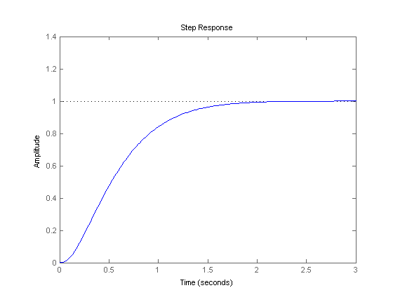
As we expected, this response has an overshoot less than 5% and a rise time less than 1 second.
Using SISOTOOL for Root Locus Design
Another way to complete what was done above is to use the interactive MATLAB GUI called sisotool. Using the same model as above, first define the plant, .
s = tf('s');
plant = (s + 7)/(s*(s + 5)*(s + 15)*(s + 20));
The sisotool function can be used for analysis and design. In this case, we will focus on using the Root Locus as the design method to improve the step response of the plant. To begin, type the following into the MATLAB command window:
sisotool(plant)
The following window should appear. To start, select the tab labeled Graphical Tuning. Within this window, turn off Plot 2 and make sure Plot 1 is the Root Locus and verify that Open Loop 1 is selected. Finally, click the button labeled Show Design Plot to bring up the tunable Root Locus plot.

In the same fashion, select the tab labeled Analysis Plots. Within this window, for Plot 1, select Step. In the Contents of Plots subwindow, select Closed Loop r to y for Plot 1. If the window does not automatically pop up, click the button labeled Show Analysis Plot.
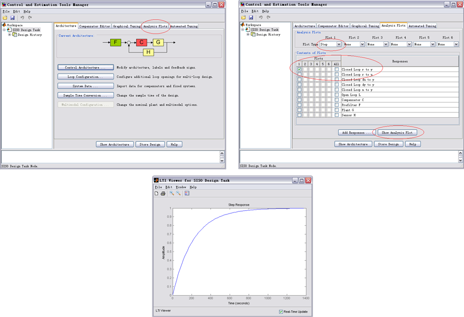
The next thing to do is to add the design requirements to the Root Locus plot. This is done directly on the plot by right-clicking and selecting Design Requirements, New. Design requirements can be set for the Settling Time, the Percent Overshoot, the Damping Ratio, the Natural Frequency, or a Region Constraint. There is no direct requirement for Rise Time, but the natural frequency can be used for this.
Here, we will set the design requirements for the damping ratio and the natural frequency just like was done with sgrid. Recall that the requirements call for = 0.7 and = 1.8. Set these within the design requirements. On the plot, any area which is still white, is an acceptable region for the poles.
Zoom into the Root Locus by right-clicking on the axis and select Properties, then click the label Limits. Change the real axis to -25 to 5 and the imaginary to -2.5 to 2.5.
Also, we can see the current values of some key parameters in the response. In the Step response, right-click on the plot and go to Characteristics and select Peak Response. Do the same for the Rise Time. There should now be two large dots on the screen indicating the location of these parameters. Click each of these dots to bring up a screen with information.
Both plots should appear as shown here:
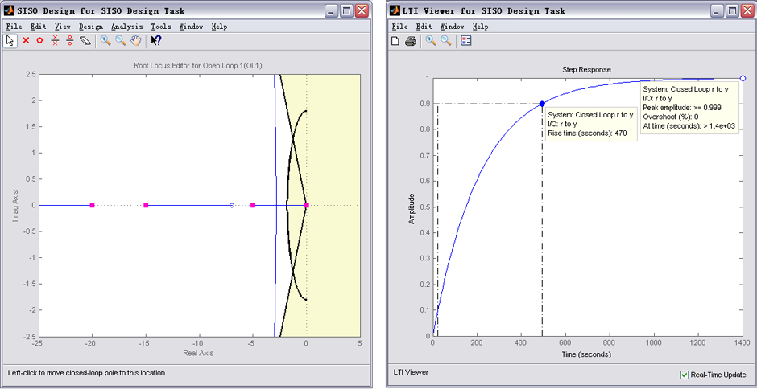
As the characteristics show on the Step response, the overshoot is acceptable, but the rise time is incredibly off.
To fix this, we need to choose a new value for the gain K. Similarly to the rlocfind command, the gain of the controller can be changed directly on the root locus plot. Click and drag the pink box on the origin to the acceptable area where the poles have an imaginary component as shown below.
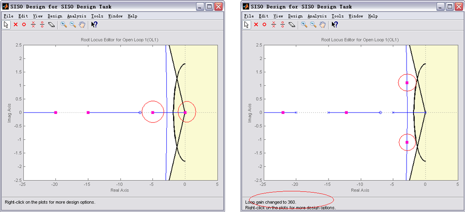
At the bottom of the plot, it can be seen that the loop gain has been changed to 361. Looking at the Step response, both of the values are acceptable for our requirements.
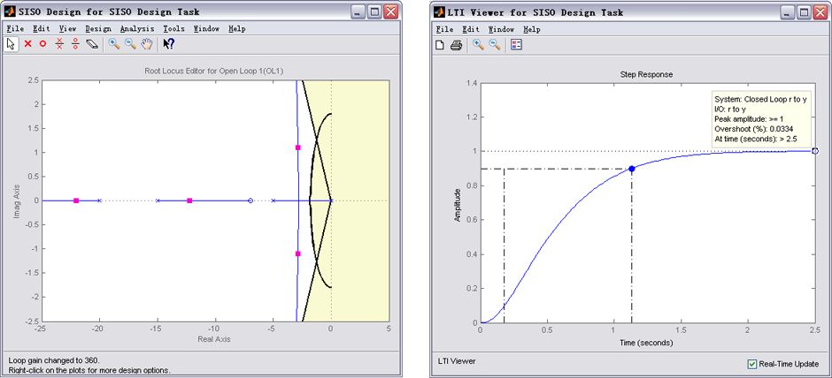